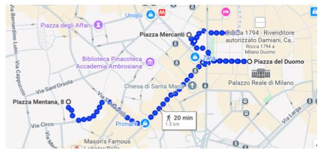
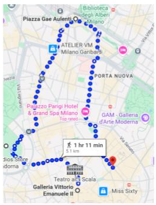

Hotel:
Panora Loft – Piazza Mentana 8
Cerca del Duomo (zona Brera)
Paseos:

La Catedral de Milán (Duomo): junto a la Plaza del Duomo, es lo más espectacular de la ciudad.
Piazza Mercanti: una plaza escondida a pocos pasos del Duomo y de la Galleria Vittorio Emanuele II. Fue sede de uno de los mercados más importantes de Italia.
Galería Vittorio Emanuele II: dar vuelta en el toro:
1️⃣ Suerte
2️⃣ Amor
3️⃣ Volver a Milán
Galería de cuatro pisos con tiendas de lujo, restaurantes, cafeterías y conexión directa con un hotel.

Via Giuseppe Verdi: calle elegante, ideal para caminar.
Castillo Sforzesco: fortaleza histórica ubicada en pleno centro de Milán.
Piazza Gae Aulenti: plaza circular moderna con fuentes y niveles inferiores visibles. Ideal para fotos desde el parking.
Cuadrilátero de la moda: delimitado por Via Montenapoleone, Via Sant’Andrea, Via della Spiga y Via Alessandro Manzoni.